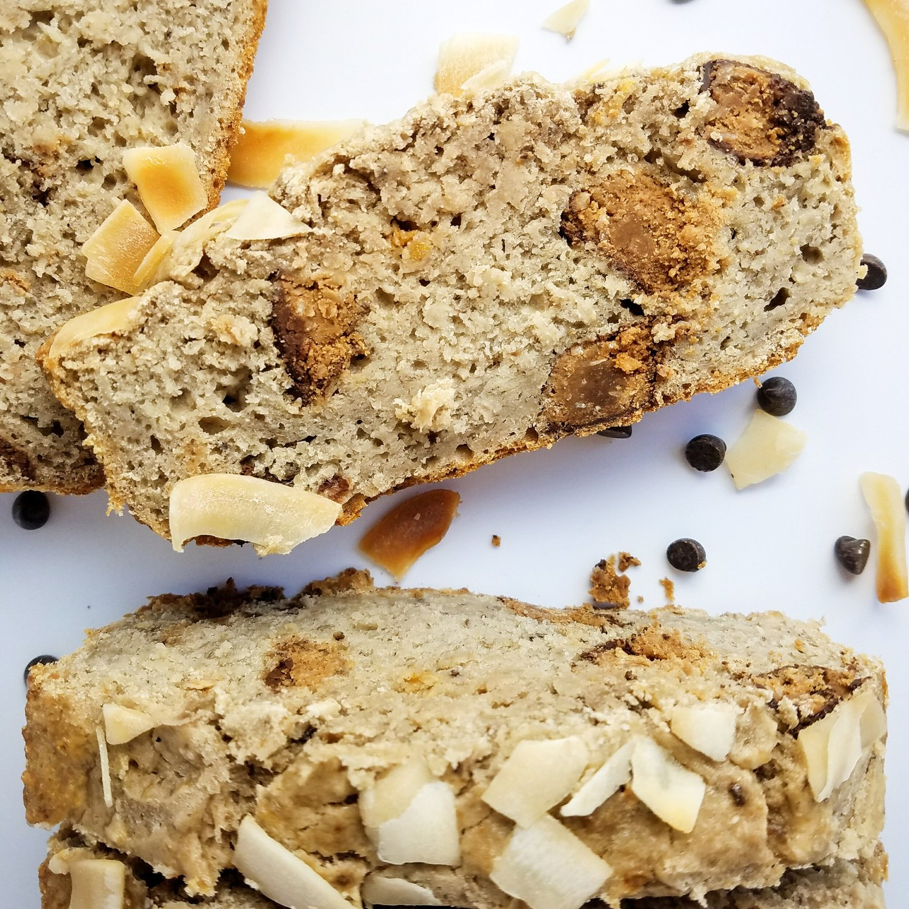
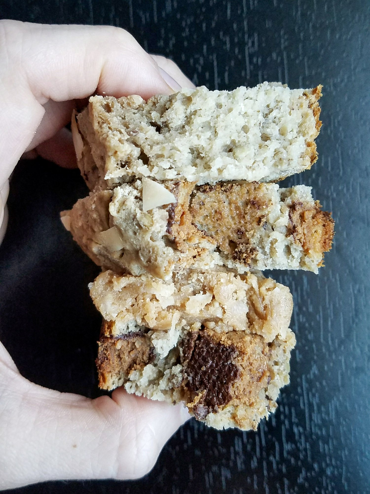
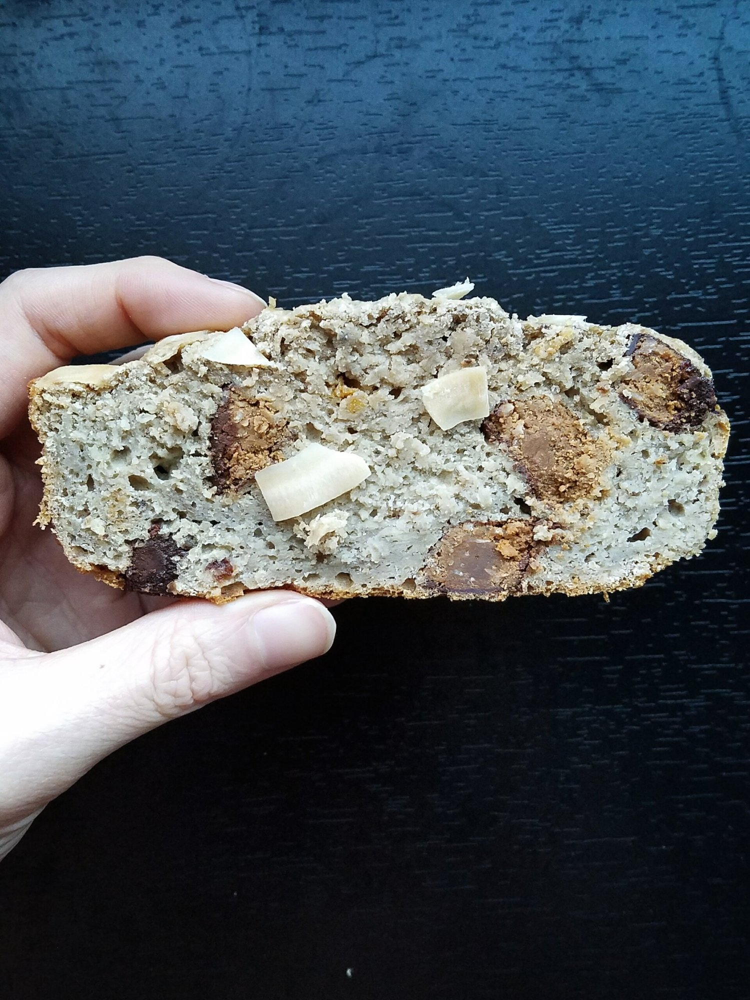

Coconut Chocolate Chip Banana Bread (vegan, gf, healthy)



Sweet, cakey coconut chocolate chip banana bread ready to be snacked on. This go-to recipe is vegan, gluten free, and sugar free as well! Enjoy this healthy treat for dessert, a quick snack, or even a light breakfast.
It is no secret that I absolutely love banana bread. I constantly have to stop myself from making banana bread, or else a good 80% of my diet would purely be banana bread. Something about the taste and texture of banana bread from the refrigerator just gets me every time. It is light, sweet, and so satisfying. It is also fun to switch up the flavors with every batch!
One of my all time favorites is still the espresso caramel swirl banana bread I made this summer. This time around, I decided to go for a coconut chocolate taste. Because who doesn't love coconut?? If you don't love coconut, just get out. Why are you even on my site? Okay so for those of you who stayed, hi friends. I like you. You deserve some delicious coconut chocolate chip banana bread.
Make yourself this sweet vegan, gluten free treat and rest easy knowing that it is completely healthy. As long as it's not 80% of your diet, that is. :p
Coconut Chocolate Chip Banana Bread
Makes: 10 slices
-
3 medium bananas, very ripe and mashed
-
1.5 cups raw oats, ground into a flour
-
1 cup buckwheat flour
-
1/4 cup unsweetened shredded coconut
-
1/2 TBSP baking powder
-
1/4 cup baking stevia (Optional)
-
1/2 dropped coconut liquid stevia drops
-
¾ cup unsweetened almond milk
-
1 Cocoa Coconut Square Bar
-
1/2 oz. toasted coconut chips (for topping, I used dang brand)
Mash your bananas into a large mixing bowl. Then add the remaining ingredients (except for the square bar and coconut chips) and mix evenly. Cut the bar into small pieces, then incorporate it into the batter. Spray a bread loaf pan with nonstick spray. Pour the batter in. Top with toasted coconut chips. Bake at 350 F for 45-50 minutes. Let cool 15 minutes, then cut into 10 slices. Enjoy!
Per slice: Approximately 170 calories; 4 g fat, 29 g carbs (4 g fiber), 4 g protein